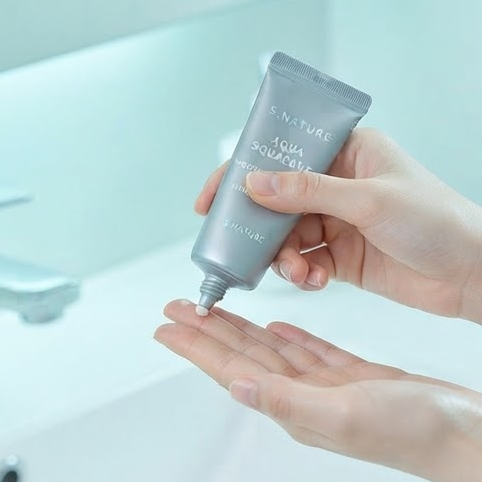
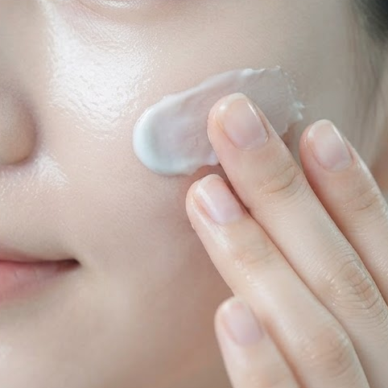

세안 후 3분 속당김?
스쿠알란 150,000ppm
스쿠알란 150,000ppm
보이도록 보습을 잠그는 아쿠아 수분크림
올리브영 온라인몰 전체 랭킹 1위
처음 보는 크림이라 망설이나요?
28,889개 리뷰가
먼저 확인한 1위 수분크림
먼저 확인한 1위 수분크림
1위
올리브영 온라인몰 전체 랭킹
4.8점
구매 리뷰 평점
28,889개
누적 리뷰 수
랭킹만으로는 부족한가요?
2023부터 2024까지
수상 이력으로 한 번 더 확인
수상 이력으로 한 번 더 확인
올리브영 어워즈 2023 트렌드올리브영 어워즈 2024 MD’s PICK큐텐 뷰티 어워즈 2023 1위올리브영 온라인몰 전체 랭킹 1위
하루에 2번 피부가 달라지나요?
아침 속당김
오후 모공 번들거림
오후 모공 번들거림
세안하고 5분도 안 됐는데 속이 당겨요
오후 3시만 되면 번들거리는데 모공은 더 보여요
화장 위로 건조결이 올라와서 크림을 또 찾게 돼요
150,000ppm
스쿠알란 함량
그냥 수분크림이 아니라 속수분을 채우고 잠그는 기준으로 보세요.
푸석해 보이는 피부가 고민인가요?
매일 1번 루틴으로
수분광 피부결 케어
수분광 피부결 케어
건조하고 푸석해 보이는 피부를 촉촉해 보이는 수분광 피부로 관리하세요.
 사용 전
사용 후
사용 전
사용 후성분표를 먼저 확인하나요?
3가지 수분 성분으로
채우고 잠그는 루틴
채우고 잠그는 루틴
150,000ppm
스쿠알란
피부에 채운 수분이 쉽게 날아가지 않도록 보습막 케어를 돕습니다.

8종
히알루론산
수분감을 겹겹이 더해 속건조 케어를 돕습니다.

함유
판테놀
건조로 예민해진 피부에 편안한 보습 장벽 케어를 더합니다.
고민이 1개로 끝나지 않나요?
데일리 1개로
피부결을 정돈하세요
피부결을 정돈하세요
💧
속수분
속수분 충전
세안 후 올라오는 당김을 수분 케어로 편안하게 정돈합니다.
🫧
모공
모공 쫀쫀 케어
번들거림 속 도드라져 보이는 모공 피부결을 쫀쫀하게 관리합니다.
✨
주름
주름 리프팅 케어
건조로 힘 없어 보이는 피부에 탄력감 있는 보습 케어를 더합니다.
무거운 크림이 걱정인가요?
아침 저녁 2번
부담 없는 아쿠아 사용감
부담 없는 아쿠아 사용감


출근 전 5분
당김 올라오기 전에
당김 올라오기 전에
아침 세면대 앞에서 세안 후 바로 바르고 피부결을 촉촉하게 정돈하세요.
사용법이 복잡하면 손이 안 가나요?
4단계로 끝나는
데일리 수분 루틴
데일리 수분 루틴

1
1단계 적당량 덜기
기초 케어 마지막 단계에서 손끝에 적당량을 덜어주세요.

2
2단계 나눠 올리기
볼 이마 턱처럼 건조가 느껴지는 부위에 나눠 올려주세요.

3
3단계 피부결 따라 펴기
피부결을 따라 안쪽에서 바깥쪽으로 부드럽게 펴 발라주세요.

4
4단계 두드려 흡수
손바닥으로 가볍게 눌러 보습감이 밀착되도록 마무리하세요.
구매 직전 다시 확인하고 싶나요?
28,889개 리뷰로
데일리 수분크림 신뢰 확인
데일리 수분크림 신뢰 확인
4.8점
리뷰 평점
28,889개
누적 리뷰
1위
올리브영 온라인몰 전체 랭킹
PRODUCT INFO
| 브랜드 | S.NATURE 에스네이처 |
|---|---|
| 제품명 | 아쿠아 스쿠알란 수분크림 |
| 용량 | 60ml |
| 핵심 성분 | 스쿠알란 150,000ppm 판테놀 8종 히알루론산 |
| 추천 고민 | 속건조 모공 건조결 수분광 케어 |
| 구매 혜택 | 1+1 프로모션 오늘드림 당일배송 가능 |